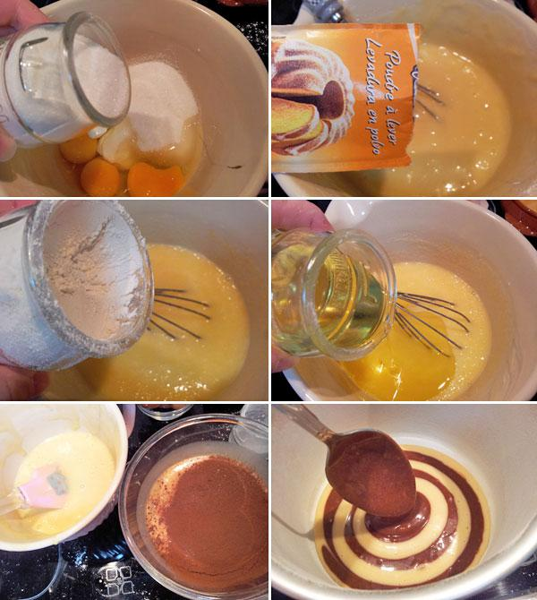

Bizcocho Zebra

INGREDIENTES
ELABORACIÓN
- 3 huevos
- 1 yogur natural
- 1 medida de aceite tomada con el vaso de yogur
- 2 medidas de azúcar
- 3 medidas de harina + 2 cucharadas
- 1 sobre de levadura
- 3 cucharadas de cacao en polvo
- Ralladura de limón o una cucharadita de esencia de vainilla
ELABORACIÓN

- Precalentamos el horno a 180º y engrasamos un molde redondo.
- En un bol, ponemos los huevos junto al azúcar, el yogur, el aceite y la ralladura de limón o esencia de vainilla y batimos bien.
- A continuación, tamizamos sobre la mezcla la harina y la levadura, e integramos bien con movimientos suaves, hasta obtener una mezcla homogénea.
- Dividimos la mezcla en dos partes iguales: a una de ellas le añadimos las tres cucharadas de cacao en polvo y a la otra las 2 cucharadas de harina para que tengan las misma consistencia, algo más densa que los bizcochos tradicionales, y batimos para integrar todo bien.
- Para verter la mezcla en el molde, debemos ir cogiendo cucharadas de cada masa. Primero ponemos una cucharada de masa blanca en el fondo del molde, formando un círculo, y después, añadimos una cucharada de masa de chocolate sobre el círculo de masa blanca. Así sucesivamente hasta terminar con toda la masa formando como una diana.
- Llevamos al horno durante 30-35 minutos aproximadamente. Comprobamos que esté bien hecho pinchando un palillo en el bizcocho y viendo si sale limpio. Dejamos enfriar sobre una rejilla.